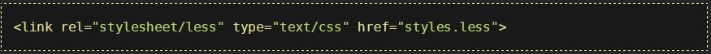

O que é o LESS?
É uma linguagem dinâmica de estilos, que estende o CSS proporcionando o uso de variavéis, operadores e funções, um pré-processador criado em 2009 por Alexis Sellier, mais conhecido como @cloudhead. Originalmente escrito em Ruby e depois convertido para Javascript.
O que são pré-processadores?
Pré-processadores são programas que recebem uma entrada, normalmente um texto, efetuando conversões em seu conteúdo que podem incluir substituições e inclusões condicionais.
Pré-Processadores CSS
No caso dos pré-processadores CSS este fluxo não é diferente, onde os códigos são desenvolvidos através de seus recursos facilitadores, depois submetido ao processador tendo como resultado seu conteúdo adequado as limitações do CSS. O principal benefício dos pré-processadores é o ganho na produtividade, seja na criação ou manutenção de estilos, gerando aplicações organizadas e sem duplicação de código.
Vantagens
- Folhas de estilos dinâmicas;
- Trabalhar com recursos fundamentais de programação, como variavéis e funções;
- Reaproveitamento de código
Instalação
Vincule seus estilos .less com o atributo rel definido como: 'stylesheet/less': 
Baixe o less.js no site oficial lesscss.org ou se prefereir diretamente no link: Get Less.js e inclua no 'head' da sua página:

Variáveis
Variáveis são bem vindas em qualquer lugar, e não poderiam faltar no CSS, quantas vezes já precisamos usar a mesma cor em diversos pontos diferentes?
Obs: Semelhante ao PHP, o LESS permite criar variáveis com strings como valor.
Aninhamento
Aninhamento(Nesting) é o que nos permite escrever o código praticamente sem repetições de seletores, o que facilita muito no desenvolvimento, pois no CSS não é possível organizar de forma hierárquica (um dentro do outro).
Pseudo-elementos
No LESS, é disponibilizado o símbolo "&" para herança de atributos e pseudo-elementos.
Mixins
São parecidos com funções, porémm são usados para grupos reutilizáveis, permitem que você incorpore todas as propriedades de uma classe para outra, são como variavéis, mas para classes inteiras.
Mixins parametrizados
O que significa que podem ter argumentos para aumentar sua utilidade.
Podem também ter um valor padrão parametrizado.
Operações
Operações como adição, subtração, divisão e multiplicação de cores e valores das propriedades, podem ser usadas para criar diversas relações entre elas.
Funções
Existem diversas funções prontas no LESS, funções de texto, matemáticas, imagens, listas, tipos e cores.
Outras funções: functions-overview - lesscss.org
Palhetas de cores automáticas
Imagine que no site (este é o site), tenha uma cor base principal e algumas cores secundárias combinando(default), ao invéz de ficar "catando" cores na tabela hexadecimal ou onde quer que seja, no LESS podemos usar funções para gerar estas cores:
No caso atual, vamos gerar cores 20% mais lights e 10% mais saturadas.
Importações
Não importa muito a ordem de declaração do "@import" no LESS, ele sempre encontrará, desde que tenha a extensão .less, diferentemente do CSS padrão.
Estas importações são importantes para separar temas ou até mesmo variáveis de "sistemas diferentes", não acumulando centenas de códigos em um mesmo arquivo.
Exemplos


Conclusão
O LESS oferece diversos recursos facilitadores, tanto para criação, quanto para a manutenção de CSS, sendo assim recomendado para sistemas novos e legados.
O uso de pré-processadores está sendo uma realidade no mercado, logo, deve ser encontrado em diversos portais, podendo também ser requisito em oportunidades de emprego.
Perguntas?

Guilherme Moura
 github.com/guilhermemoura
github.com/guilhermemoura
 guilherme.moura@aplub.com.br
guilherme.moura@aplub.com.br
Obrigado!